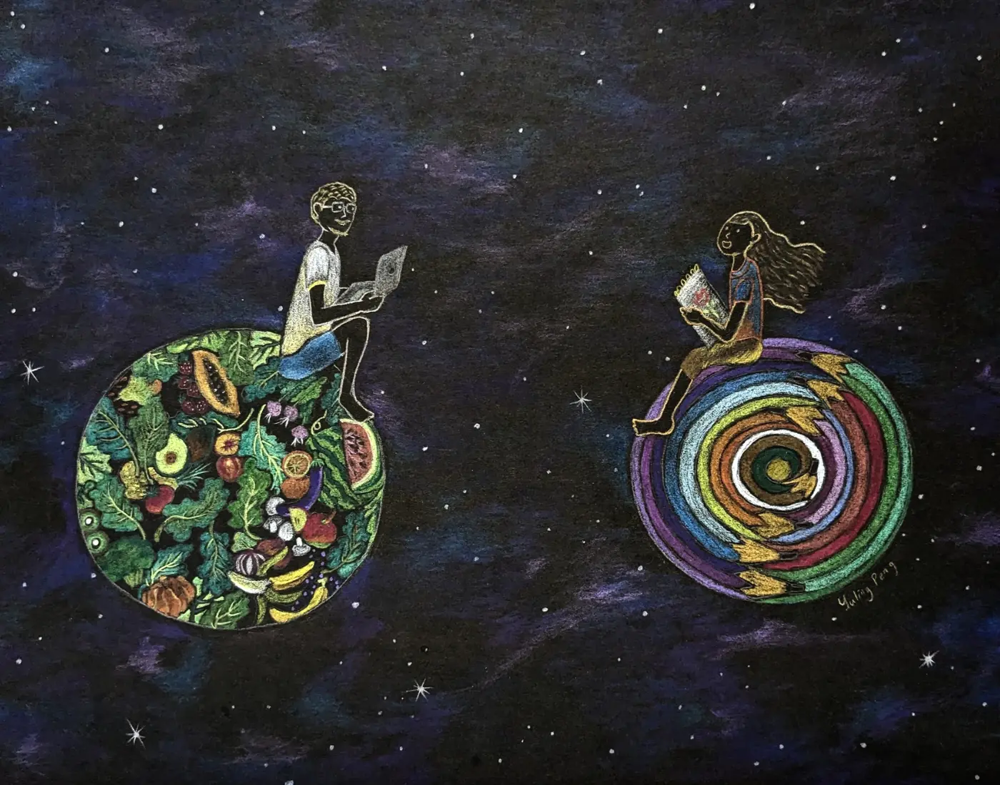

Boris. 2023
Story/Comment by the Artist
Boris found my art on social media. We had a great time talking about mankind and the universe.
Details - Original Work
- Size: A4/ 21cm x 29.7cm (8.27x11.69")
- Mediums: colored pencils, drawing paper (black)